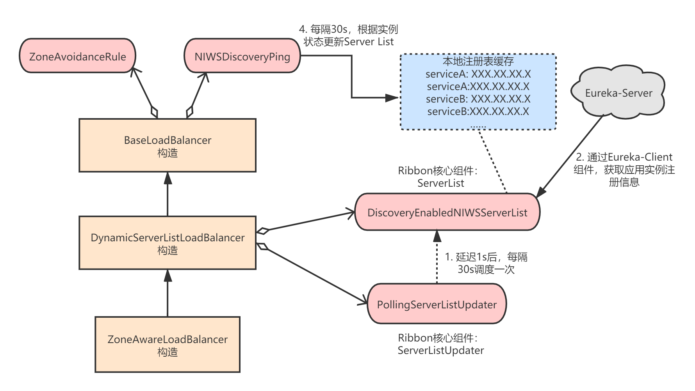

上一章，我讲到Ribbon对请求的核心处理流程是在ILoadBalancer中完成的，而Spring Cloud默认提供的ILoadBalancer就是ZoneAwareLoadBalancer。
本章，我就对ZoneAwareLoadBalancer和其它Ribbon核心组件进行分析，看看它们是如何与Eureka整合在一起，最终完成客户端负载均衡功能的。
本章核心内容我用下面这张图来表述：

默认负载均衡器是ZoneAwareLoadBalancer，它在构造时，会注入其它Ribbon核心组件（其实是把组件注入到父类的属性中）：
// ZoneAwareLoadBalancer.java
public class ZoneAwareLoadBalancer<T extends Server> extends DynamicServerListLoadBalancer<T> {
public ZoneAwareLoadBalancer(IClientConfig clientConfig, IRule rule,
IPing ping, ServerList<T> serverList, ServerListFilter<T> filter,
ServerListUpdater serverListUpdater) {
super(clientConfig, rule, ping, serverList, filter, serverListUpdater);
}
}
这些Ribbon核心组件是在Spring Cloud应用启动时，通过自动装配机制就创建并注入到Spring容器中了，可以参考前面的《Ribbon初始化流程》章节。
DynamicServerListLoadBalancer是ZoneAwareLoadBalancer的父类，内部又调用了父类BaseLoadBalancer的构造器：
// DynamicServerListLoadBalancer.java
public class DynamicServerListLoadBalancer<T extends Server> extends BaseLoadBalancer {
public DynamicServerListLoadBalancer(IClientConfig clientConfig, IRule rule, IPing ping,
ServerList<T> serverList, ServerListFilter<T> filter,
ServerListUpdater serverListUpdater) {
super(clientConfig, rule, ping);
this.serverListImpl = serverList;
this.filter = filter;
this.serverListUpdater = serverListUpdater;
if (filter instanceof AbstractServerListFilter) {
((AbstractServerListFilter) filter).setLoadBalancerStats(getLoadBalancerStats());
}
restOfInit(clientConfig);
}
}
我们看下restOfInit方法，这个方法的核心是内部的enableAndInitLearnNewServersFeature()和updateListOfServers()这两个方法：
// DynamicServerListLoadBalancer.java
void restOfInit(IClientConfig clientConfig) {
boolean primeConnection = this.isEnablePrimingConnections();
// turn this off to avoid duplicated asynchronous priming done in BaseLoadBalancer.setServerList()
this.setEnablePrimingConnections(false);
// 初始化Server列表
enableAndInitLearnNewServersFeature();
// 更新Sever列表
updateListOfServers();
if (primeConnection && this.getPrimeConnections() != null) {
this.getPrimeConnections()
.primeConnections(getReachableServers());
}
this.setEnablePrimingConnections(primeConnection);
LOGGER.info("DynamicServerListLoadBalancer for client {} initialized: {}", clientConfig.getClientName(), this.toString());
}
该方法的作用是启动一个定时任务，延时1s后，每隔30s进行一次Server List的更新：
// DynamicServerListLoadBalancer.java
protected final ServerListUpdater.UpdateAction updateAction = new ServerListUpdater.UpdateAction() {
@Override
public void doUpdate() {
// 调用该方法更新Server List
updateListOfServers();
}
};
public void enableAndInitLearnNewServersFeature() {
LOGGER.info("Using serverListUpdater {}", serverListUpdater.getClass().getSimpleName());
// 利用Ribbon组件ServerListUpdater更新Server，默认为com.netflix.loadbalancer.PollingServerListUpdater
serverListUpdater.start(updateAction);
}
// PollingServerListUpdater.java
public synchronized void start(final UpdateAction updateAction) {
if (isActive.compareAndSet(false, true)) {
final Runnable wrapperRunnable = new Runnable() {
@Override
public void run() {
if (!isActive.get()) {
if (scheduledFuture != null) {
scheduledFuture.cancel(true);
}
return;
}
try {
updateAction.doUpdate();
lastUpdated = System.currentTimeMillis();
} catch (Exception e) {
logger.warn("Failed one update cycle", e);
}
}
};
scheduledFuture = getRefreshExecutor().scheduleWithFixedDelay(
wrapperRunnable,
initialDelayMs, // 1s
refreshIntervalMs, // 30s
TimeUnit.MILLISECONDS
);
} else {
logger.info("Already active, no-op");
}
}
再来看下具体是如何更新Server List的，本质是调用了DiscoveryEnabledNIWSServerList.getUpdatedListOfServers()：
public void updateListOfServers() {
List<T> servers = new ArrayList<T>();
// serverListImpl就是ServerList，默认为com.netflix.niws.loadbalancer.DiscoveryEnabledNIWSServerList
if (serverListImpl != null) {
// 这里执行真正的获取Server List的操作
servers = serverListImpl.getUpdatedListOfServers();
LOGGER.debug("List of Servers for {} obtained from Discovery client: {}",
getIdentifier(), servers);
// 对获取到的Server进行过滤
if (filter != null) {
servers = filter.getFilteredListOfServers(servers);
LOGGER.debug("Filtered List of Servers for {} obtained from Discovery client: {}",
getIdentifier(), servers);
}
}
updateAllServerList(servers);
}
我在Ribbon客户端配置原理一章中已经讲过，如果与Eureka结合使用，那么默认的ServerList就是
com.netflix.niws.loadbalancer.DiscoveryEnabledNIWSServerList。
我们来看下DiscoveryEnabledNIWSServerList，其实就是通过EurekaClient从EurekaServer获取服务注册表，然后生成ServerList：
// DiscoveryEnabledNIWSServerList.java
public List<DiscoveryEnabledServer> getUpdatedListOfServers(){
return obtainServersViaDiscovery();
}
private List<DiscoveryEnabledServer> obtainServersViaDiscovery() {
List<DiscoveryEnabledServer> serverList = new ArrayList<DiscoveryEnabledServer>();
if (eurekaClientProvider == null || eurekaClientProvider.get() == null) {
logger.warn("EurekaClient has not been initialized yet, returning an empty list");
return new ArrayList<DiscoveryEnabledServer>();
}
// 1.获取Eureka客户端
EurekaClient eurekaClient = eurekaClientProvider.get();
if (vipAddresses!=null){
for (String vipAddress : vipAddresses.split(",")) {
// 2.获取应用实例信息
List<InstanceInfo> listOfInstanceInfo = eurekaClient.getInstancesByVipAddress(vipAddress, isSecure, targetRegion);
for (InstanceInfo ii : listOfInstanceInfo) {
if (ii.getStatus().equals(InstanceStatus.UP)) {
if(shouldUseOverridePort){
if(logger.isDebugEnabled()){
logger.debug("Overriding port on client name: " + clientName + " to " + overridePort);
}
InstanceInfo copy = new InstanceInfo(ii);
if(isSecure){
ii = new InstanceInfo.Builder(copy).setSecurePort(overridePort).build();
}else{
ii = new InstanceInfo.Builder(copy).setPort(overridePort).build();
}
}
// 3.添加到Server List
DiscoveryEnabledServer des = createServer(ii, isSecure, shouldUseIpAddr);
serverList.add(des);
}
}
if (serverList.size()>0 && prioritizeVipAddressBasedServers){
break;
}
}
}
return serverList;
}
与Eureka结合使用时，应用程序本身就是一个Eureka-Client。
看完了DynamicServerListLoadBalancer的构造，我们再来看下BaseLoadBalancer，因为DynamicServerListLoadBalancer构造时也有调用它的父类BaseLoadBalancer的构造器：
// BaseLoadBalancer.java
public class BaseLoadBalancer extends AbstractLoadBalancer implements
PrimeConnections.PrimeConnectionListener, IClientConfigAware {
public BaseLoadBalancer(String name, IRule rule, LoadBalancerStats stats,
IPing ping, IPingStrategy pingStrategy) {
initWithConfig(config, rule, ping, createLoadBalancerStatsFromConfig(config));
}
void initWithConfig(IClientConfig clientConfig, IRule rule, IPing ping, LoadBalancerStats stats) {
this.config = clientConfig;
String clientName = clientConfig.getClientName();
this.name = clientName;
// 心跳间隔:30s
int pingIntervalTime = Integer.parseInt(""
+ clientConfig.getProperty(
CommonClientConfigKey.NFLoadBalancerPingInterval,
Integer.parseInt("30")));
int maxTotalPingTime = Integer.parseInt(""
+ clientConfig.getProperty(
CommonClientConfigKey.NFLoadBalancerMaxTotalPingTime,
Integer.parseInt("2")));
// 将心跳间隔属性设置为30
setPingInterval(pingIntervalTime);
setMaxTotalPingTime(maxTotalPingTime);
// 设置负载均衡策略组件
setRule(rule);
// 设置心跳组件
setPing(ping);
setLoadBalancerStats(stats);
rule.setLoadBalancer(this);
if (ping instanceof AbstractLoadBalancerPing) {
((AbstractLoadBalancerPing) ping).setLoadBalancer(this);
}
logger.info("Client: {} instantiated a LoadBalancer: {}", name, this);
boolean enablePrimeConnections = clientConfig.get(
CommonClientConfigKey.EnablePrimeConnections, DefaultClientConfigImpl.DEFAULT_ENABLE_PRIME_CONNECTIONS);
if (enablePrimeConnections) {
this.setEnablePrimingConnections(true);
PrimeConnections primeConnections = new PrimeConnections(
this.getName(), clientConfig);
this.setPrimeConnections(primeConnections);
}
init();
}
}
这里重点看setRule(rule);和setPing(ping);。
该方法就是注入负载均衡策略对象，默认自动装配的是ZoneAvoidanceRule：
public void setRule(IRule rule) {
if (rule != null) {
this.rule = rule;
} else {
/* default rule */
this.rule = new RoundRobinRule();
}
if (this.rule.getLoadBalancer() != this) {
this.rule.setLoadBalancer(this);
}
}
RibbonClientConfiguraiton中配置了ZoneAvoidanceRule。
该方法就是注入心跳组件对象，然后启动心跳任务，默认自动装配的是NIWSDiscoveryPing：
public void setPing(IPing ping) {
if (ping != null) {
if (!ping.equals(this.ping)) {
this.ping = ping;
setupPingTask(); // since ping data changed
}
} else {
this.ping = null;
// cancel the timer task
lbTimer.cancel();
}
}
EurekaRibbonClientConfiguration中配置了NIWSDiscoveryPing。
我们看下启动心跳任务的代码，其实就是每隔30执行一次心跳：
void setupPingTask() {
if (canSkipPing()) {
return;
}
if (lbTimer != null) {
lbTimer.cancel();
}
lbTimer = new ShutdownEnabledTimer("NFLoadBalancer-PingTimer-" + name,
true);
// pingIntervalSeconds为30s
lbTimer.schedule(new PingTask(), 0, pingIntervalSeconds * 1000);
forceQuickPing();
}
PingTask内部最终会执行IPing.isAlive()，而NIWSDiscoveryPing的该方法仅仅是根据本地注册表中的应用实例状态来判断对应的Server状态是否正常：
// NIWSDiscoveryPing.java
public boolean isAlive(Server server) {
boolean isAlive = true;
if (server!=null && server instanceof DiscoveryEnabledServer){
DiscoveryEnabledServer dServer = (DiscoveryEnabledServer)server;
InstanceInfo instanceInfo = dServer.getInstanceInfo();
if (instanceInfo!=null){
InstanceStatus status = instanceInfo.getStatus();
if (status!=null){
isAlive = status.equals(InstanceStatus.UP);
}
}
}
return isAlive;
}
ZoneAwareLoadBalancer构造完成后，所有的核心流程就已经完成了。我们回到负载均衡客户端RibbonLoadBalancerClient，它最终会根据IRule选择一个Server发起调用：
// RibbonLoadBalancerClient.java
public ServiceInstance choose(String serviceId, Object hint) {
Server server = getServer(getLoadBalancer(serviceId), hint);
if (server == null) {
return null;
}
return new RibbonServer(serviceId, server, isSecure(server, serviceId),
serverIntrospector(serviceId).getMetadata(server));
}
protected Server getServer(ILoadBalancer loadBalancer, Object hint) {
if (loadBalancer == null) {
return null;
}
// 内部利用负载均衡器来选择Server
return loadBalancer.chooseServer(hint != null ? hint : "default");
}
我们来看下ZoneAwareLoadBalancer是如何选择Server的，最终肯定是利用了IRule组件，默认实现是ZoneAvoidanceRule：
// ZoneAwareLoadBalancer.java
public Server chooseServer(Object key) {
if (!ENABLED.get() || getLoadBalancerStats().getAvailableZones().size() <= 1) {
logger.debug("Zone aware logic disabled or there is only one zone");
return super.chooseServer(key);
}
Server server = null;
try {
LoadBalancerStats lbStats = getLoadBalancerStats();
Map<String, ZoneSnapshot> zoneSnapshot = ZoneAvoidanceRule.createSnapshot(lbStats);
logger.debug("Zone snapshots: {}", zoneSnapshot);
if (triggeringLoad == null) {
triggeringLoad = DynamicPropertyFactory.getInstance().getDoubleProperty(
"ZoneAwareNIWSDiscoveryLoadBalancer." + this.getName() + ".triggeringLoadPerServerThreshold", 0.2d);
}
if (triggeringBlackoutPercentage == null) {
triggeringBlackoutPercentage = DynamicPropertyFactory.getInstance().getDoubleProperty(
"ZoneAwareNIWSDiscoveryLoadBalancer." + this.getName() + ".avoidZoneWithBlackoutPercetage", 0.99999d);
}
Set<String> availableZones = ZoneAvoidanceRule.getAvailableZones(zoneSnapshot, triggeringLoad.get(), triggeringBlackoutPercentage.get());
logger.debug("Available zones: {}", availableZones);
if (availableZones != null && availableZones.size() < zoneSnapshot.keySet().size()) {
String zone = ZoneAvoidanceRule.randomChooseZone(zoneSnapshot, availableZones);
logger.debug("Zone chosen: {}", zone);
if (zone != null) {
// 这里是关键，利用父类BaseLoadBalancer完成Server选择
BaseLoadBalancer zoneLoadBalancer = getLoadBalancer(zone);
server = zoneLoadBalancer.chooseServer(key);
}
}
} catch (Exception e) {
logger.error("Error choosing server using zone aware logic for load balancer={}", name, e);
}
if (server != null) {
return server;
} else {
logger.debug("Zone avoidance logic is not invoked.");
return super.chooseServer(key);
}
}
上述代码调用了父类BaseLoadBalancer.chooseServer()方法：
public Server chooseServer(Object key) {
if (counter == null) {
counter = createCounter();
}
counter.increment();
if (rule == null) {
return null;
} else {
try {
// 这里是关键，利用了组件IRule
return rule.choose(key);
} catch (Exception e) {
logger.warn("LoadBalancer [{}]: Error choosing server for key {}", name, key, e);
return null;
}
}
}
最后，看下ZoneAvoidanceRule.choose()，其实是在它的父类PredicateBasedRule中定义的：
// PredicateBasedRule.java
public Server choose(Object key) {
ILoadBalancer lb = getLoadBalancer();
// 就是典型的Round Robin策略
Optional<Server> server = getPredicate().chooseRoundRobinAfterFiltering(lb.getAllServers(), key);
if (server.isPresent()) {
return server.get();
} else {
return null;
}
}
可以看到，没什么特殊的地方，就是个普通的Round Robin算法。
本章，我对Ribbon中的其它组件进行了分析，读者关键是理解整个Ribbon客户端的工作流程。至此，Spring Cloud Netflix Ribbon的源码分析就到这里。想要更深入分析并对Ribbon进行定制改造的童鞋，建议好好看下Spring Cloud官方文档，然后自己按照我的分析读一遍Ribbon的核心源码。